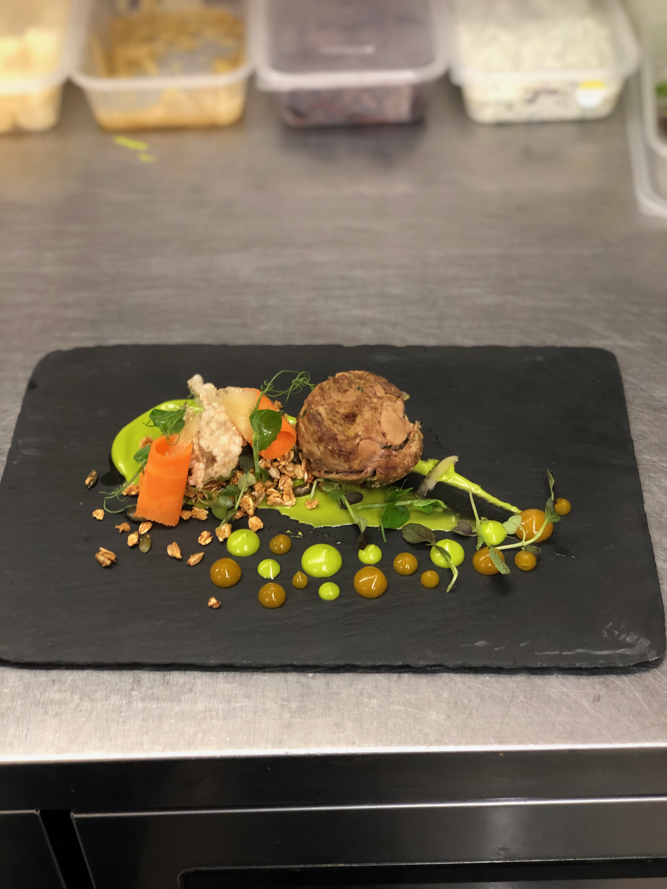
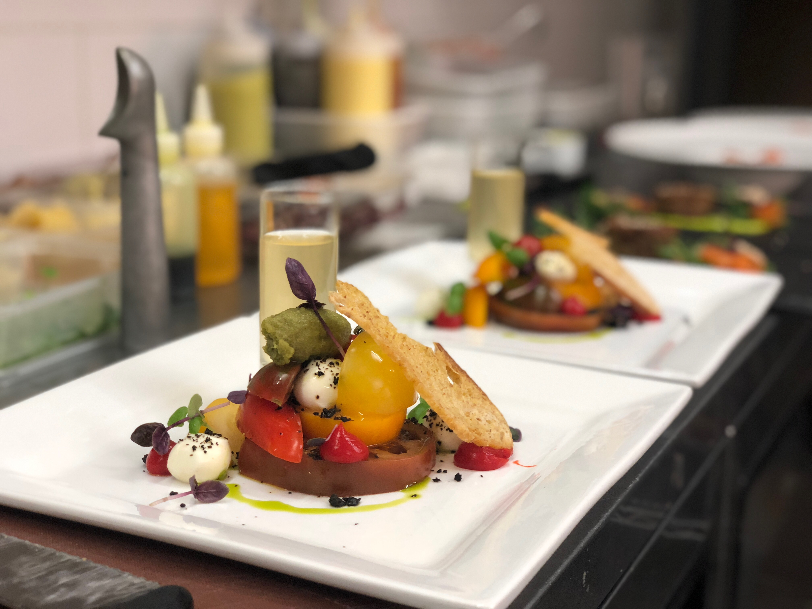
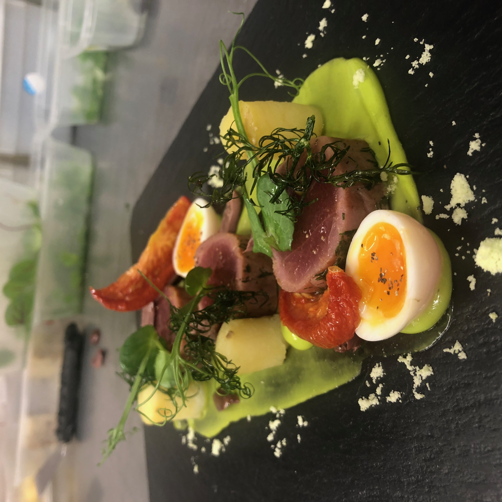
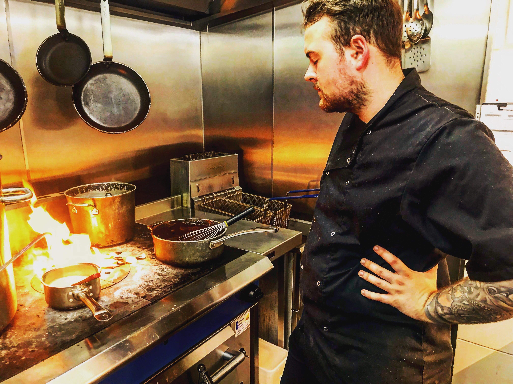

Hi, I am Seamus or 'Shay' for short, I am 22 years old and am currently a student at De Montfort University studying Media Production (BSc). I have a wide range of hobbies and interests, such as:
However most notably I have trained as a chef and worked in professional kitchens since 2013 - when I was 15 years old. I find food to be one of the greatest passions of mine, followed very closely behind by Music. Below are some photos of the food I made whilst working in a Kitchen last summer, (and one of me losing the will to live when the stove caught fire!)
|  |  |
|  |  |
Working in a kitchen is as stressful as it is rewarding, to get an idea of what it can be like, close your eyes and have a listen to the audio below.
Below we also have a short video of my old Head Chef putting the finishing touches on one of our seasonal dishes:
If you would like to have a look at the restaurant I worked at click here.